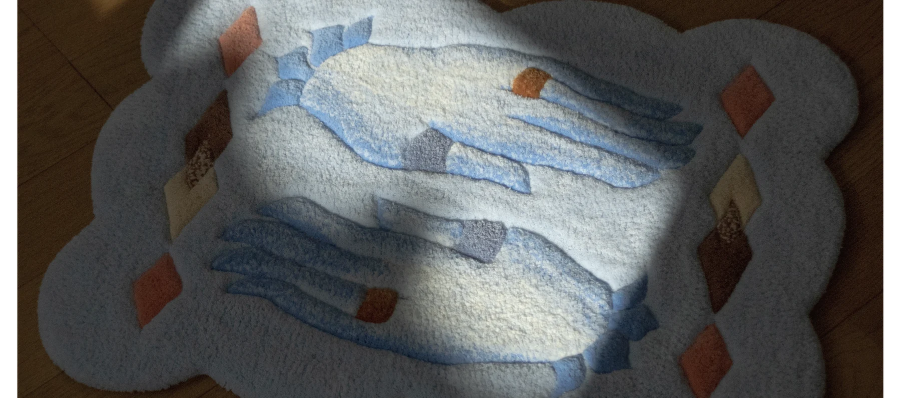

Care & keeping
大切なものと、
長く暮らす。
手触りと色を、日々の中で楽しむために。

日常のお手入れ
表面のホコリを軽く払い、裏面に掃除機をかけてください。表面は、固く絞った濡れタオルでやさしく拭きます。
飲み物などをこぼしたら
ティッシュなどでまず水分を取り、固く絞った濡れタオルで軽くたたくように拭きます。乾いたタオルで水分を取り、風通しのよい日陰で十分に乾かしてください。
遊び毛について
アクリル素材のラグは、使い始めに遊び毛が出ることがあります。使用とともに落ち着いていきますが、完全になくなるとは限りません。
洗濯・クリーニング
ドライクリーニングはお避けください。水洗いはなるべく控え、必要な場合は手洗い・押し洗いで。素材や作品ごとの注意点は、必ず個別にご確認ください。
光と湿気
長時間の直射日光は色褪せにつながることがあります。湿気を残さず、よく乾かしてからお使いください。
このページはショップのお手入れ案内の要約です。素材や作品によって扱いが異なります。
ショップの詳しいお手入れ案内 作品について相談する